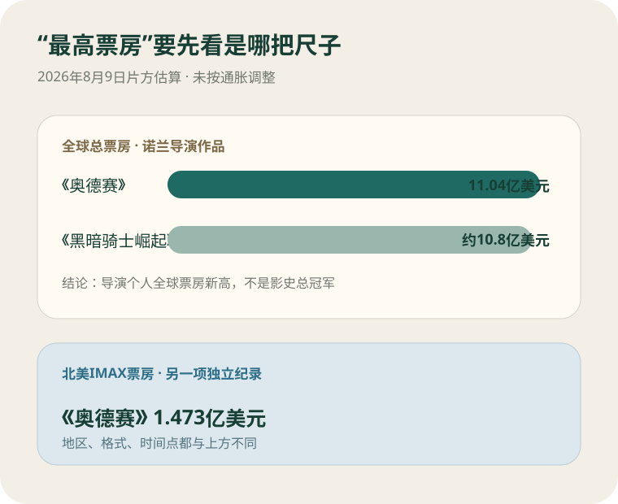
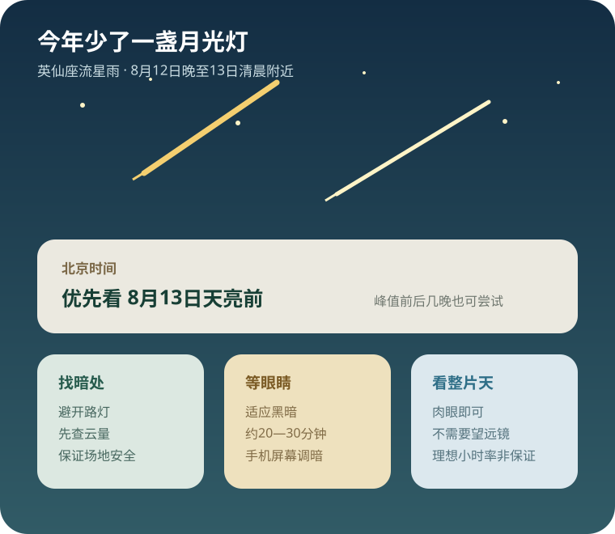
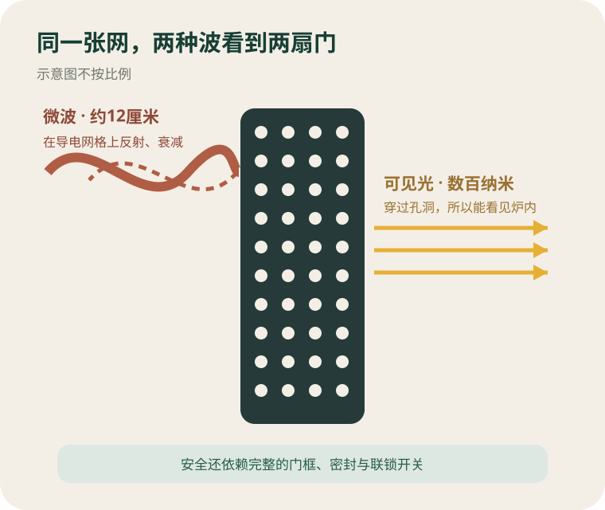
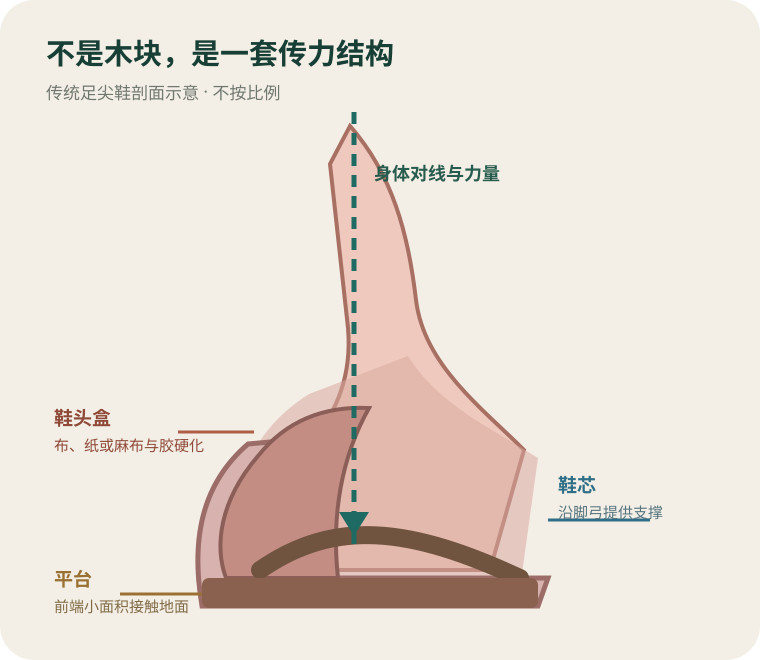
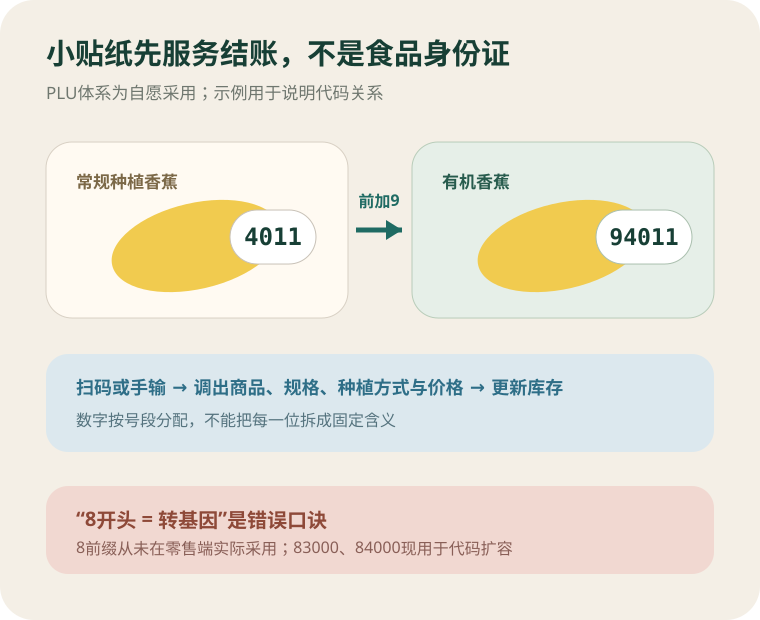

今日热点 01 · 天气 / 出行
台风“白海豚”登陆华东，登陆不等于风险结束
美联社8月9日报道，“白海豚”当晚在浙江台州一带登陆，登陆时风速估计约151公里/小时；华东超过30万人提前转移，上海两座机场取消1300多架次航班。
发生了什么
风暴已经上岸，强降雨和次生灾害仍在后面
已确认：美联社称，“白海豚”8月9日晚影响浙江台州及邻近福建北部沿海。此前一天，华东多地停课、关闭景区并组织转移；上海浦东和虹桥机场合计取消1300多架次航班。报道中的登陆风速约151公里/小时，浙江还面临洪水和山体滑坡风险。
不要误读：“登陆”只是台风中心越过海岸线，不是警报自动解除。陆地摩擦通常会削弱近中心风力，但水汽、地形和残余环流仍可能把强降雨推向内陆。身处受影响地区，应继续以当地气象、应急和交通部门的滚动信息为准。
为什么航班先停
航空系统要躲的不只是机场上空那一阵风
机场运行要同时考虑跑道侧风、低空风切变、雷雨、能见度、停机坪作业和飞机调度。一个机场即使短时天气尚可，前序航班、机组和备降机场被打乱，也可能无法维持正常航班链。因此，大规模取消常发生在台风中心抵达之前。
提前停飞会让当日损失看起来很大，却能避免飞机和旅客在风险快速上升时集中滞留。恢复也不会只看雨停没停：航空公司还要重新安排飞机、机组和时刻。查询行程时，机场天气、航司通知和实际航班状态应放在一起看。
这与你有什么关系
返程改签之外，还要防“雨停了就安全”的错觉
若准备经过上海、浙江或福建，先确认航班、铁路和公路是否真实恢复，不要只凭原定时刻出发。山区和临水道路在暴雨后仍可能出现滑坡、落石、积水与桥涵水位上涨；已经撤离的人，应等待当地明确通知再返回。
台风过境后的另一项现实任务是检查门窗、电路和食物储存。积水区域不要涉水通行或触碰不明电线；停电时间较长时，冰箱内食物是否安全要按温度和时间判断，而不是靠气味。
聊天时可以补一句
台风名字很温和，危险程度却由实时结构决定
“Dolphin”由中国香港提供，指中华白海豚，也是香港的代表动物之一。西北太平洋台风名称由台风委员会成员依次提供，名称本身不表示强弱；同一个名字再次轮到时，风暴的路径、尺度和强度都可能完全不同。
所以判断风险不能靠名字听起来凶不凶，也不能只盯一个中心风速。降雨范围、移动速度、风暴潮、地形和城市排水能力，都会改变同一场台风在不同地点造成的后果。
登陆是风暴路径上的一个时刻，不是风险归零的按钮。
查看事实与延伸来源
美联社8月9日：白海豚登陆华东、转移与航班取消
美联社8月8日：停课、景区关闭与200—400毫米降雨预报
日本气象厅：西北太平洋热带气旋命名表与Dolphin含义
今日热点 02 · 电影 / 商业
《奥德赛》成了诺兰票房最高的电影，IMAX也刷新一项纪录
美联社8月9日按片方估算报道，《奥德赛》全球累计票房达到11.04亿美元，超过《黑暗骑士崛起》；其北美IMAX票房为1.473亿美元，成为IMAX北美市场票房最高的影片。

两把尺子：全球总票房比较导演个人作品，北美IMAX票房比较一种放映格式的市场纪录。数字为8月9日片方估算，未按通胀调整；据美联社与IMAX整理。
纪录是什么
11.04亿美元是全球总票房，1.473亿美元只算北美IMAX
导演纪录：美联社称，《奥德赛》全球累计11.04亿美元，超过《黑暗骑士崛起》的约10.8亿美元，成为克里斯托弗·诺兰名下全球票房最高的电影。这个比较没有按通胀调整，也不是说它已经成为影史全球票房冠军。
格式纪录：同一报道给出的1.473亿美元，是影片在北美IMAX银幕上的累计票房，超过此前该市场的纪录。总票房、某地区票房和某种放映格式票房是三把不同的尺子，标题里只写“最高”很容易把它们混成一件事。
为什么IMAX占比高
它不是上映后再放大，而是从拍摄到排片都围绕大银幕
IMAX官方称，《奥德赛》是首部全片使用IMAX 70毫米胶片摄影机拍摄的院线电影。它的全球开画中，IMAX贡献约5200万美元；全球只有41个地点能放映IMAX 70毫米版本，但这些银幕在开画周末贡献了约630万美元。
这种稀缺性与诺兰长期强调的影院观看方式一起，把放映格式变成了影片营销的一部分。观众买的不只是故事，还包括画幅、颗粒、亮度、声场和少数胶片拷贝带来的“这场不同”感。高票价因此不只是附加费，也是一种产品分层。
数字还会变化
中国尚未上映，当前排名是里程碑，不是结算单
IMAX在7月20日的公告中列出后续市场：中国内地8月14日上映，日本9月11日上映。也就是说，8月9日的全球累计仍会继续增加；周末票房还是片方估算，之后可能出现小幅修正。
票房报道最值得看的不是一个孤立的大数，而是口径和时间点：是否含海外、是否含重映、是否按通胀调整、是估算还是最终数。把这些条件补齐，才能判断一项纪录到底说明观众规模、票价结构，还是特定格式的稀缺性。
聊天时可以补一句
“全片IMAX拍摄”不等于每家IMAX影院都放70毫米胶片
拍摄介质、发行母版和影院放映设备是三件事。影片可以全程用IMAX胶片摄影机拍摄，但绝大多数IMAX影厅仍使用数字放映；能运行IMAX 70毫米胶片拷贝的地点很少。买票时如果在意版本，应查看影院标注，而不是只看IMAX三个字母。
这也解释了为什么41块胶片银幕能制造远超数量的讨论：它们把工业技术、导演品牌和限量场次叠在一起。纪录一方面属于电影，另一方面也在展示影院如何用不可在家复制的体验重新定价。
谈票房纪录，先问地区、格式、时间点和是否按通胀调整。
查看事实与延伸来源
美联社8月9日：《奥德赛》刷新诺兰与北美IMAX纪录
IMAX公司7月20日：全球开画数据、70毫米银幕与后续上映市场
Variety 7月28日：票房口径、前纪录与中国上映时间
今日热点 03 · 天文 / 观测
英仙座流星雨本周迎来峰值，今年月光格外配合
美联社8月9日提醒，英仙座流星雨将在8月12日晚至13日清晨达到峰值；新月几乎不制造月光干扰，北半球暗夜地区的观测条件比多数年份更好。

峰值约在北京时间8月13日清晨前后；具体可见数量受云量、光污染、视野和辐射点高度影响。示意图不按比例，据NASA、IMO和美联社整理。
新消息是什么
峰值遇上新月，少了一盏最难躲开的天然灯
国际流星组织的2026年日历把传统宽峰值放在8月12日21时至13日9时（世界时），其中主峰约为13日2时至4时。换算到北京时间，是13日清晨到傍晚；中国观测者更实用的窗口是13日天亮前，并可在前后几个夜晚继续尝试。
8月12日恰逢新月，月光干扰很小。NASA因此把今年称为大多数地区都很有希望的一次观测；不过“每小时100颗”是理想暗夜、辐射点位置和统计口径下的天顶每时出现率，不是每个人抬头都能数到的保证。
它从哪里来
看到的不是恒星坠落，而是地球穿过彗星留下的尘埃带
英仙座流星体来自斯威夫特—塔特尔彗星沿轨道留下的碎屑。地球每年在相近日期穿过这条尘埃带，小颗粒以高速进入大气层，压缩并加热周围空气，留下短暂亮迹。它们从天空各处出现，只是反向延长轨迹后似乎汇聚在英仙座附近。
“辐射点”是透视效果，不是必须盯住的发射孔。一直看英仙座附近，反而容易只见到较短的轨迹；选择开阔天空、让视野覆盖更大范围，通常更容易看到长亮线。
怎样看更实际
不用望远镜，最重要的设备是暗处、时间和耐心
离开直射路灯和城市亮区，找视野开阔且安全的地点。抵达后给眼睛约20至30分钟适应黑暗，手机屏幕调暗；躺椅或地垫能减少仰头疲劳。望远镜视野太窄，不适合追踪随机出现的流星。
先查逐小时云量，再决定是否出门。若峰值夜多云，前后几晚仍有机会；英仙座流星雨从7月中旬持续到8月下旬，只是远离峰值后数量会减少。不要为“卡准一分钟”忽视天气、交通和夜间场地安全。
聊天时可以补一句
同一天的日食不在中国可见，也不是流星雨的原因
8月12日的日全食带经过西班牙、冰岛和格陵兰一带；它与英仙座流星雨峰值相遇，是两个可预测天象在时间上重叠，并不存在因果关系。中国观测者看不到这次日全食，但仍可在本地夜空寻找流星。
两种天象的观看方式也相反：日食必须使用合格的太阳观测防护，流星雨则用肉眼看暗夜。把它们打包成“天文大日子”没有问题，安全规则却不能混用。
流星雨看整片暗天空，不用望远镜，也别把理想小时率当承诺。
查看事实与延伸来源
美联社8月9日：2026年英仙座流星雨观测条件与峰值
NASA：2026年8月12—13日峰值与新月条件
国际流星组织：2026年流星雨日历、峰值时段与ZHR
NASA：英仙座流星体与斯威夫特—塔特尔彗星
涉猎 01 · 电磁学 / 家电
微波炉门上那层黑网，为什么看得见里面却挡得住微波
门上的导电网孔远小于微波约12厘米的波长，会使微波在网格上激起电流并被强烈反射、衰减；可见光波长短得多，仍能穿过孔洞进入眼睛。

典型微波炉工作频率约2.45GHz，对应波长约12厘米；网孔远小于这个尺度。示意图不按比例，据FDA与威廉与玛丽学院物理资料整理。
两种波的尺度不同
同一扇门，对厘米级微波像墙，对可见光却像窗
典型微波炉使用约2.45GHz电磁波，波长约12厘米。门上的孔通常只有毫米量级，导电网格会在微波电场作用下产生电流，把大部分能量反射回金属腔体。常说“波太大钻不过孔”是方便记忆的简化说法，真正起作用的是孔径相对波长很小以及金属的电磁响应。
可见光的波长只有数百纳米，比网孔小得多，因此能从孔里通过。每个孔遮掉一部分光，黑色表面又减少反光，所以从外面仍能看见炉内，画面只是比没有网时更暗。
安全不只靠网
门框、密封结构和联锁开关共同把微波留在里面
FDA要求制造商说明观察窗、门闩、密封和抑制射频泄漏的结构；家用微波炉还应在开门时停止产生微波。金属腔体、观察窗网格、门边的结构和联锁不是可互换的单件，而是一套系统。
完好的合规微波炉按说明使用通常是安全的。若门铰链、门闩、密封或观察窗已经变形、破裂，不能用“还能关上”判断安全，应停止使用并联系制造商或合格维修人员。
能看见是因为光的波长短；能挡微波靠的是小孔导电网和完整门体。
查看事实与延伸来源
美国FDA：微波被金属反射、门体损坏与使用安全
美国FDA产品报告表：观察窗、金属网、门闩与密封检查项
威廉与玛丽学院物理讲义：2.45GHz、波长与门网孔
涉猎 02 · 舞蹈 / 制鞋
芭蕾舞者不是踩在木块上，足尖鞋怎样把重量交给脚尖
足尖鞋的鞋头盒由布、纸或麻布与胶层硬化，脚弓下还有鞋芯支撑；两者把力量导向前端的小平台，但稳定仍依赖合脚程度、脚踝力量和身体对线。

传统足尖鞋的鞋头盒不是木块；硬化织物层包住脚趾，鞋芯沿足弓提供支撑，前端平台接触地面。原创示意图，据美国国家艺术基金会与Bata鞋类博物馆整理。
鞋里有什么
硬的是层层材料和胶，不是一块塞进鞋头的木头
传统制法会把麻布、纸或棉布等材料分层粘合，形成包住脚趾的鞋头盒；鞋底内侧的鞋芯沿脚弓提供纵向支撑，外面再覆盖缎面并接上皮革鞋底。胶固化后结构变硬，却仍会被体温、湿气和反复弯折逐渐软化。
鞋头最前端有一小块较平的平台。鞋头盒和鞋芯把重量向这个平台传递，同时限制脚在鞋内左右滑动。博物馆的表述是“转移”重量，不是消除重量：压力仍由脚趾、前脚掌、脚弓、脚踝与整条腿共同承受。
为什么不能买来就站
鞋提供结构，真正保持一条直线的是训练与合脚
试鞋要看脚型、鞋头宽度、鞋面高度、脚弓和鞋芯强度，还要观察站上足尖后的对线。太宽会让脚向下滑，太窄会挤压脚趾；鞋芯过硬或过软，都可能让舞者难以把踝、足弓和平台稳定地排在受力线上。
专业舞者会按角色和脚感处理鞋芯、平台、缎面、缎带与松紧带，但这些做法不是初学者的通用教程。足尖训练需要教师评估力量、骨骼发育与技术准备；鞋子能帮助传力，不能替代足踝力量。
足尖鞋把重量导向小平台，站稳仍靠合脚、力量和对线。
查看事实与延伸来源
美国国家艺术基金会：足尖鞋材料、制作、试鞋与损耗
Bata鞋类博物馆：鞋头盒、鞋芯和平台怎样传递重量
Bata鞋类博物馆：胶、纸与麻布形成坚固鞋头盒
涉猎 03 · 零售 / 食品标签
水果贴纸上的四五位数字，真正告诉收银台什么
PLU是散装果蔬的价格查询码，用来区分品种、大小和种植方式等属性。四位码通常对应常规种植，前面加9表示有机；它不是政府强制标签，也不能据此判断是否转基因。

示例中，有机代码是在四位常规代码前加9。代码系统属自愿采用，具体商品以IFPS数据库和当地有机认证标签为准。原创示意图，据IFPS与香港食物安全中心整理。
数字怎样工作
它先解决收银员“这是什么、该卖多少钱”的问题
国际农产品标准联盟自1990年以来维护PLU体系，目前已分配1500多个代码。代码主要用于散装新鲜果蔬，也可覆盖坚果和香草；收银系统用它调出商品、品种、规格、种植方式和价格，库存系统则用同一标识记录销售。
四位代码用于常规种植产品；有机产品通常在对应四位码前加9。代码不是把每一位拆开解释的密码，IFPS明确说数字在规定号段内分配，“某一位永远代表某种属性”的读法并不成立。
最常见的误读
8开头不等于转基因，83000和84000是扩容号段
过去曾预留8前缀来标记转基因产品，但并未在零售端实际采用。香港食物安全中心明确指出，PLU不能用来判断果蔬是否转基因；想核对有机身份，也应查看符合当地标准的有机认证标签，而不是只认一张小贴纸。
IFPS现把83000和84000系列留作3000、4000系列用尽后的新代码，所以“看到8就是转基因”的网络口诀如今更会造成误判。PLU体系还是自愿的，并非任何政府强制；没有贴纸也不表示商品有问题。
PLU主要服务结账和库存；9前缀可表示有机，8前缀不是转基因暗号。
查看事实与延伸来源
国际农产品标准联盟：PLU用途、号段、有机前缀与自愿性质
香港食物安全中心2022年：8前缀未被零售采用，PLU不能识别转基因
香港食物安全中心2025年：PLU没有逐位含义，有机需核对认证标签
“若一个人从确信出发，他终会落入怀疑；若肯从怀疑出发，他终会抵达确信。”
弗朗西斯·培根《学术的进展》（1605） · 本刊译
培根先把思考比作两条路：一条开头平坦，最后却走不通；另一条入口崎岖，往后反而平顺。这句话不是承诺怀疑最终会带来绝对无误的答案，而是在批评急于断言。调查若从“我已经知道”开始，反证只会制造更大的裂缝；先承认未知，证据才有机会改变路线。确信在这里是工作的结果，不是工作的前提。
核对原文与语境
“试图解放一个根本不知道自己并不自由的妻子，是没有用的。”
伊迪丝·华顿《纯真年代》（1920） · 本刊译
纽兰·阿切尔在婚后逐渐发现，自己想象中的“解放梅”仍由他来定义：他希望妻子变得自由，却没有认真理解她怎样看待婚姻、体面和选择。句子的讽刺也落回他身上——一个人不能把自己的觉醒当作他人的任务。真正的自由既不是替别人宣布，也不是把人推向预设方向，而是让当事人拥有理解处境和决定行动的空间。
核对原文与语境
“作家今天不能为制造历史的人服务；他要为承受历史的人服务。”
阿尔贝·加缪《诺贝尔奖晚宴演说》（1957） · 本刊译
加缪领取诺贝尔文学奖时，先承认艺术不能脱离共同生活。他说作家若跟随权力的队伍，就会失去作品赖以存在的共同体；相反，一个无名囚徒的沉默也足以把作家召回责任。这里的“服务”不是替受苦者代言，而是拒绝遗忘并让沉默被听见。写作者仍须守住真实与自由，否则关怀也可能变成另一种口号。
核对原文与语境
“世上最重要的事，是一个人知道自己属于自己。”
米歇尔·德·蒙田《随笔集·论独处》（1580） · 本刊译
蒙田在《论独处》中讨论的不是逃离所有关系，而是为自己保留一个不被职位、财物和他人期待完全占据的内部空间。他写这句话时已谈到从公共生活退下，也提醒人不能把幸福拴在不可控制的外物上。“属于自己”不是自私封闭，而是即使失去依附，仍能判断什么值得爱、什么应当放手，并对自己的时间负责。
核对原文与语境
“大家之作，其言情也必沁人心脾，其写景也必豁人耳目。其辞脱口而出，无矫揉妆束之态。”
王国维《人间词话》（1908—1909）
这段话评价的是好作品怎样让情与景直接抵达读者。“脱口而出”并不等于不修改，也不是鼓励随手写；王国维在同则后文强调，作品看似自然，是因为感受真切、语言不被套语遮住。所谓没有“矫揉妆束”，不是拒绝形式，而是不让修饰抢走对象本身。写作越想显得有文采，越需要追问：读者究竟看见了什么、感到了什么。
核对原文与语境